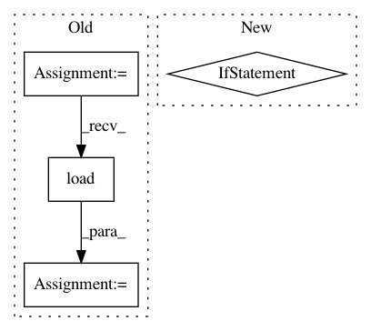

23dffb96ac95827a3af89f6ff027d254284ba93c,onmt/inputters/inputter.py,DatasetLazyIter,__iter__,#DatasetLazyIter#,528
Before Change
def __iter__(self):
paths = cycle(self._paths) if self.is_train else self._paths
for path in paths:
cur_dataset = torch.load(path)
logger.info("Loading dataset from %s, number of examples: %d" %
(path, len(cur_dataset)))
cur_dataset.fields = self.fields
cur_iter = OrderedIterator(
dataset=cur_dataset,
batch_size=self.batch_size,
batch_size_fn=self.batch_size_fn,
device=self.device,
train=self.is_train,
sort=False,
sort_within_batch=True,
repeat=False
)
for batch in cur_iter:
yield batch
cur_dataset.examples = None
After Change
def __iter__(self):
num_batches = 0
paths = self._paths
if self.is_train and self.repeat:
// Cycle through the shards indefinitely.
paths = cycle(paths)
for path in paths:
for batch in self._iter_dataset(path):
yield batch
num_batches += 1
In pattern: SUPERPATTERN
Frequency: 3
Non-data size: 4
Instances
Project Name: OpenNMT/OpenNMT-py
Commit Name: 23dffb96ac95827a3af89f6ff027d254284ba93c
Time: 2019-02-08
Author: guillaumekln@users.noreply.github.com
File Name: onmt/inputters/inputter.py
Class Name: DatasetLazyIter
Method Name: __iter__
Project Name: allenai/allennlp
Commit Name: 700abc65fd2172a2c6809dd9b72cf50fc2407772
Time: 2020-02-03
Author: mattg@allenai.org
File Name: allennlp/models/bert_for_classification.py
Class Name: BertForClassification
Method Name: __init__
Project Name: OpenNMT/OpenNMT-py
Commit Name: 1b50e0ce69cff758a6ed4cef847c01e9aa5b3f2d
Time: 2020-01-28
Author: guillaumekln@users.noreply.github.com
File Name: tools/release_model.py
Class Name:
Method Name: